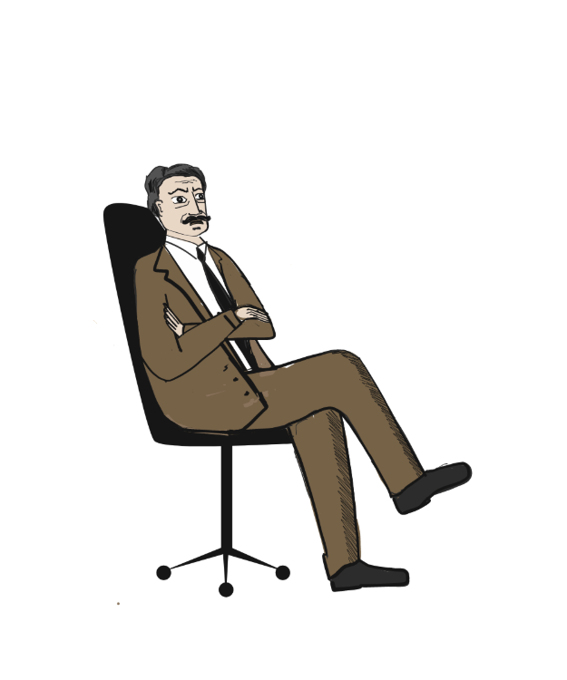
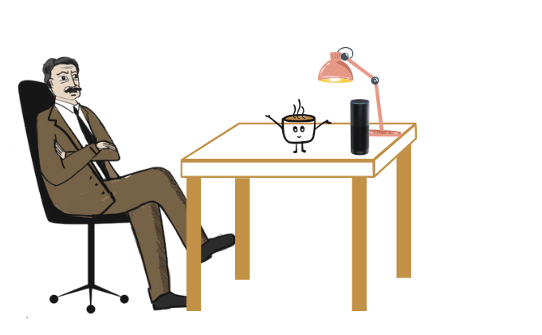
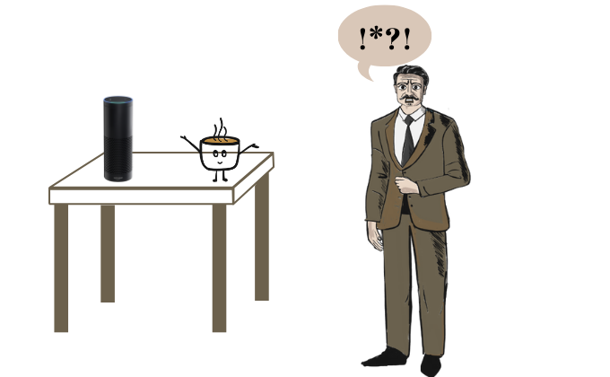
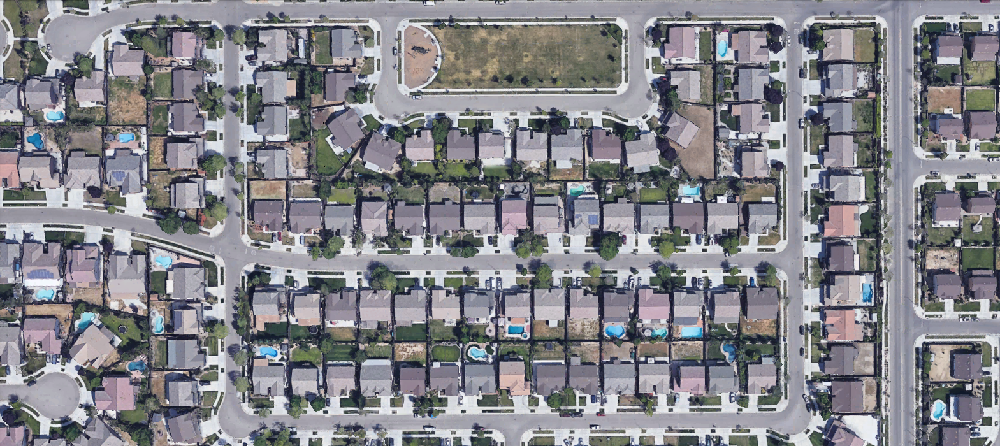
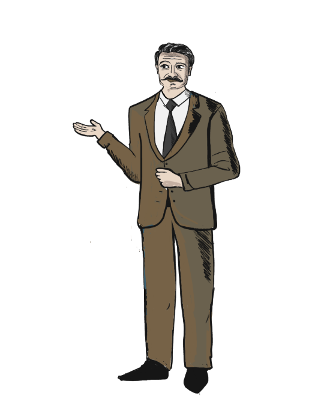
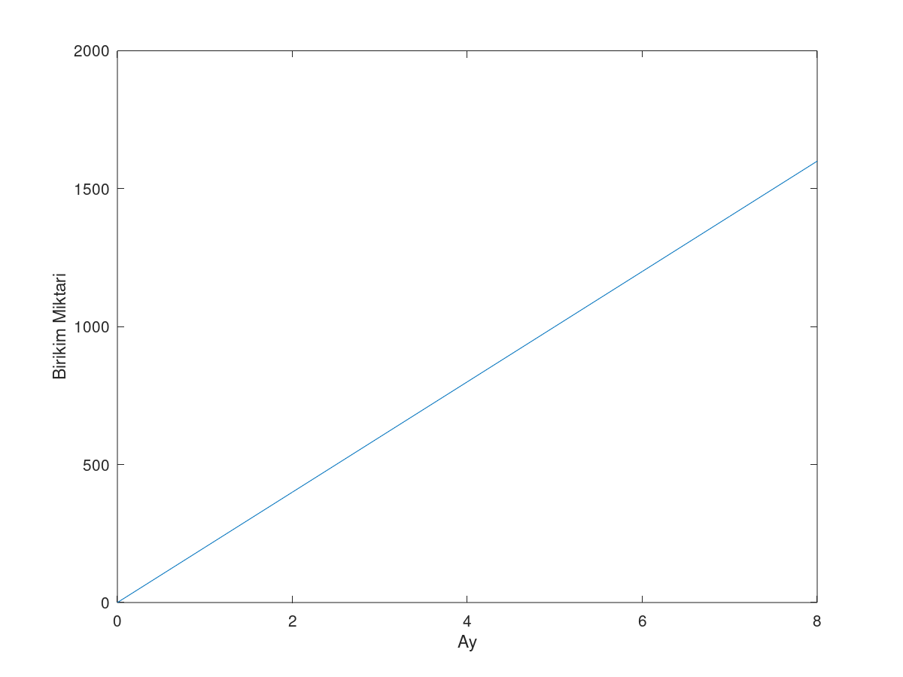
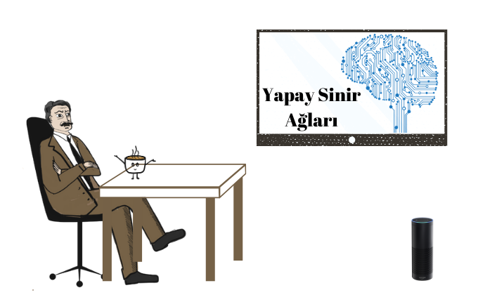
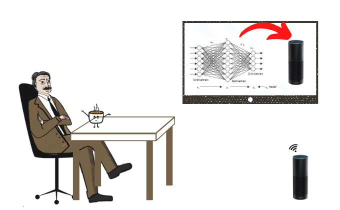
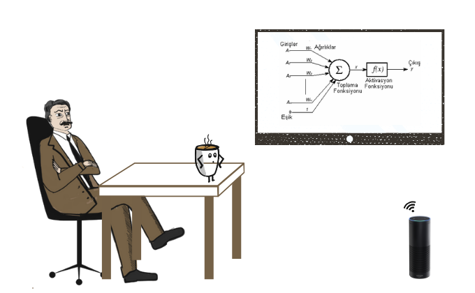
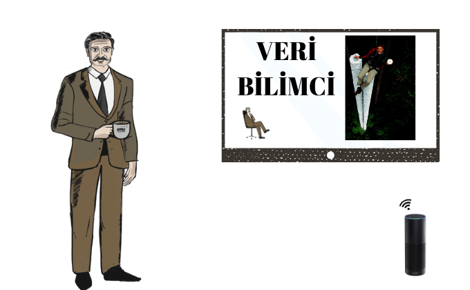

Alberto işten gelmiş telefonuyla yeni bir ev arıyordu. Bean her zamanki yerinde mutfak dolabında doldurulmayı bekliyordu. Piko ise o sıralarda uyku modundaydı. Alberto İşini bıraktı ve mutfağa yönelip Bean’ i yerinden aldı kahvesini doldurdu masanın kenarına bıraktı. Kendisi de sandalyesine oturdu. Canı sıkkın bir şekilde bardağa bakarken birden duyduğu ses ile irkildi. Bean’ in sesiydi bu. “Alberto” dedi Bean.

Yapay Zeka İnteraktif Sunum
Karakterleri Tanıyalım

Alberto meraklı, bilgili bir Felsefe öğretmenidir. Yeni şeyler öğrenmeye bayılır. Seni dikkatle dinler, en ince ayrıntılarına kadar durumu öğrenmeye çalışır. Son günlerde popüler olan sesli asistanlardan birine kendisi de sahiptir. Onun aklını karıştırmak için elinden geleni yapacaktır.

Merhaba, ben Piko size özel tasarlanmış sesli asistanım. Aslında çok bilmiş biriyim. Bana soracağın her soruyu dikkatle dinlerim ve en uygun cevabı sana iletirim. Bu arada bir sıkıntın olursa bana gelebilirsin. İnsan psikolojisinden de çok iyi anlarım.
Bean genelde sessiz duran fakat her zaman yanı başımızda duran kahve bardağımızdır. Morali bozuk Alberto’ yu görmeye dayanamaz ve bir anda dilegelir!
Hikayemiz Başlıyor


Duydukları ile adeta buz kesmişti Alberto fakat sakinlikle cevap verdi. Alberto: Ev sahibimin evi satması nedeniyle yeni bir eve ihtiyacım var. Bu yüzden bir ev bakıyorum, sence bir ev alırken dikkat edilmesi gereken unsurlar nelerdir? Piko: Bir evin öncelikle senin için yeterli alana sahip olup olmaması önemlidir. Bunun yanında bütçene uygunluğu da kriterlerinden olmalıdır. Ayrıca alacağın evin iş ve ulaşım araçlarına uzaklığı da göz önüne almalısın. Her gün gideceğin işine evin ne kadar yakın olursa o kadar vakit kazanırsın. Alberto: Teşekkür ederim Piko. Şimdi sırada uzun bir internet araması var. Umarım o kadar evden bir tane bulabilirim. Tabii bir de tek tek bunlar ile ilgili bilgi toplamak...

Piko: Şehirdeki tüm binaları ve konumlarını biliyorum. İnternetten sana uygun olacağını düşündüğüm birkaçını bulmak benim için kolay bir iş. Ben hemen gerekli verileri toplayarak dönüyorum. Piko birçok ev bulur. Piko: Alberto! İstemeyeceğin kadar ev buldum sana! Alberto: Ben de bundan korkuyordum, hepsini nasıl inceleyeceğim? Piko: Bu verilerle daha kolay incelemek için grafiklerle düzenleyebilirim.
Lineer Problemlere Giriş

Piko:Değerinden fazla para ödememek adına aklındaki ev boyutu için ideal bir fiyat belirlemek önemlidir. Bunu sana sağladığım grafiklerle nasıl hesaplarız inceleyelim. Öncelikle lütfen yandaki ev fiyatları/metrekare grafiğini incele.
Alberto: Bu grafik bana ne sağlıyor?


Piko: İdeal bir fiyat belirlemek için verinin sınırları içerisinde verilen bir ev boyutu girdisi için ortalama bir fiyat hesaplıyor olabilmemiz gerekiyor. Bunun için geliştirilmiş çeşitli matematiksel formüller ve yollar var, bu yolları incelemeden önce anlayışını kuvvetlendirmek adına grafikler ve koordinat sistemini hatırlayalım.
Piko: Eğer ay sayısını Y ile, birikimi X ile gösterirsek yukarıdaki grafiği
X = Y *200
denklemi ile ifade edebiliriz. Fazla soyut kalmaması adına denklemi grafikteki değerlerle çözelim:
Alberto: Anlıyorum. Eğer veriyi bu şekilde bir denklem ile ifade edersek bize verilmeyen örnekleri tahmin etme şansımız olur! Tıpkı az önce bize verilmeyen 11. ayı tahmin ettiğimiz gibi.

YAPAY ZEKA NEDİR?
Piko: O zaman en basitinden yapay zeka nedir sizce? Alberto: AAA ben bunu filmde izlemiştim. Dünyayı ele geçirecek kötü robotlar mı yoksa? Piko: Yapay zeka benim, Cankuş. Ben sizin söylediklerinizden öğreniyorum.. Kısacası yapay zeka bir bilgisayarın veya bilgisayar kontrolündeki bir robotun çeşitli faaliyetleri zeki canlılara benzer şekilde yerine getirme kabiliyetidir diyebiliriz. Bu yeteneklerin henüz dünyayı ele geçirebilecek seviyede olduğunu düşünmüyorum.
.png)
YAPAY ZEKANIN KULLANIM ALANLARI NELERDİR?
Bean: Peki eğer dünyayı ele geçiremeyeceklerse, ne yapıyor bu yapay zekalar? Piko: Yapay zeka günümüzde spor müsabakaları, sağlık, otomotiv, video oyunları, finans ve ekonomi alanları gibi daha birçok alanda kullanılmaktadır Alberto. Hadi o zaman sizinle bir tahmin oyunu oynayalım
Telefonlarımızda yolu gösteren gps sistemleri
Telefonlarımızda dinlediğimiz müziğe göre bize öneri veren uygulamalar
Fotoğraflarımızı çizgi gibi farklı stillere dönüştüren uygulamalar
Fotoğraf çekmek
Geçmiş verilere göre ev fiyatını bulmak
Yapay Zeka Kullılanlar
Yapay Zeka Kullanılmayanlar
Yapay Nöronlar

P: Şu ana kadar, evlerin metrekare ile fiyatlarını tahmin konusunda başarı ile ilerledik. Fakat evlerin Alberto’ nun işine olan uzaklığı konusunda sorun yaşadık. Çözümden önce insanların günlük hayatlarında problemlerini nasıl çözdüklerini sormak istiyorum. A: Biz insanlar problemleri akıl ve mantık ile çözeriz bu işlerlerse beyinde gerçekleşir. Fakat daha detaylı anlatmam gerekirse, tüm bu olaylar sinir sistemimizde nöronlar yardımıyla çözülür.

P: Söylediklerine katılıyorum. Fakat nöron deyip geçmemeliyiz. Çünkü çözümü anlamak için öncelikle biyolojik nöronları anlamalıyız. Nöronlar, duyu organları ile elde edilen verileri alıp elektriksel durumlarına göre değerlendirerek sonuçlar üretir. Tek bir işlemi yapmak için bile birçok nöron gerekmesidir. Nöronlar, vücutta elektrokimyasal sinyalleri alan ve ileten özelleşmiş hücrelerdir. Nöronlar üç temel bölümden oluşur: dendrit, hücre gövdesi ve akson. Neden öncelikle nöronları anlamalıyız ? İlk yapay sinir ağları tasarlanırken, daha yapay zeka kavramı ortaya çıkmamıştı! Yapay sinir ağları nörobilimcilerin insan beyninin çalışma ve karar verme aşamalarının şema edilmesi ve modellenmesi sonucu ortaya çıkmıştır.

P: Biliyor muydunuz? Bende yapay sinir ağları kullanılarak üretildiğim için insanların günlük hayat problemleri ile uyumlu çalışabiliyorum. Peki bu sistem nasıl çalışıyor? Bunları bir arada çalışan yapay nöronlara borçluyum. Her yapay nöronum üzerine gelen veriyi yine onunla gelen eğitim sürecinden kalmış ağırlık ile toplar ve aktivasyon fonksiyonuna girer ve fonksiyonun sonucuna göre yeni veri oluşturup sonraki katmana iletir.

P: Konuşmamın arasında az önce ağırlıklardan bahsetmiştim fakat bunu daha detaylı anlatmalıyım. Benim tepki ve cevaplarımın oluşması iki aşamadan oluşuyor. İlk olarak eğitim denen aşama ile ön bilgilere sahip oluyorum bunu sizin bebekliğinize benzetebiliriz. Sizde küçükken sıcak bir şeye dokunup eliniz yandıktan sonra sıcak cisimlere dokunmanın tehlikeli olabileceğini öğrendiniz. Umarım buna gerek kalmamıştır. Fakat bende neyin doğru ya da yanlış olduğunu eğitim sürecinde öğreniyorum. Eğitim sürecinde ağırlıklar en doğru sonuca yaklaşmak için sürekli değişiyor. Bazen sadece ağırlıklar da yeterli olmuyor ve burada sapma değerleri söz konusu oluyor. Sonucun doğru şekilde çıkması için bazı nöronlar üzerine gelen veriye sapma değerleri ekleyebiliyor. Bu değerlerin uygun sonuçlar verebilmesi eğitim sürecinde sahip olduğum verilere bağlıdır.
ÇOK KATMANLI YAPI
.png)
P: Şimdi yapay sinir ağlarının nasıl çalıştığını anlamak için daha detaylı inceliyoruz. Şimdi gelelim çok katmanlı yapıya… (soru)Çok katmanlı yapı giriş ve çıkış bölümlerinin yanı sıra gizli katmanların eklenmesiyle oluşur. Bu yeteneği ile birçok problemi çözme konusunda bize yardımcı olmuştur. Ayrıca çok katmanlı yapı sayesinde lineer olmayan problemlere de çözüm sağlanmıştır.
İLERİ BESLEME
.png)
P: İleri beslemeli sinir ağları, birimler arasındaki bağlantıların bir döngü oluşturmadığı yapay sinir ağlarıdır. İleri beslemede veri, sadece ileriye doğru ilerler. Yani önce giriş düğümlerinden, daha sonra gizli düğümlerden (varsa) ve son olarak da çıkış düğümlerinden ilerler. Alberto:Hiçbir şey anlamadım
İLERİ BESLEME
Alberto: Hmm...Şimdi anladım Piko. Peki veri derken neyi kastettin?
Acısıyla Tatlısıyla Yapay Zeka

A: Yapay zeka harika! Bu alanda nasıl kendimi geliştirebilirim? P: Yapay zeka için verilerin öneminden bahsetmiştik. Sen de veri bilimi ile ilgilenebilirsin. Veriler tarih ilerledikçe hızla artmakta. Bu artışın genel nedeni endüstri ve internet. Üretimin kolaylaşması ve paylaşımın artması ile üretilen veride artıyor. Veriler arttıkça daha karmaşık hale geliyor. Devlet arşivleri, internet vb. Sağlayıcılardan elde ettiğimiz veriyi işlemekse zorlaşıyor. Bu yüzden yeni bir meslek bile oluştu “Veri Bilimci”. Önceki durumlardan da öğrendiğimiz gibi iyi bir yapay zeka eğitmek için bolca veriye ihtiyacımız vardı. Fakat bu verilerin doğruluğu ve alakası da çok önemliydi.
.png)
B: Benim hangi verilerimi topluyorlar, beni kaçıracaklar mı?! P:Burada çok büyük bir alan mevcut. Sokaklardaki kamerelardan hareketliliğimiz, duygusal durumumuz gibi veriler toplanabiliyor. Ya da kullandığımız akıllı saat veya bileklikler ile kalp atışımızdan gün içindeki adım sayımıza kadar erişilebiliyor. Zaten hepimizin bildiği sosyal medya araçlarıysa adımızdan nelerden hoşlandığımıza kadar biliyor. Ben bile sizi daha iyi anlamak için konuşmalarımızı kayderek kendimi geliştir.
.png)
Alberto: Neee! Dinleniyor muyuz?
Piko: Hmm...dinlenildiğini söylemek pek de yanlış olmaz Alberto. Her ne kadar dediğin her kelimeyi karşı tarafta dinleyen bir insan olmasa da ; mikrofon kullanımına izin verdiğin bir uygulamayı açtığında, yapay zeka ve çeşitli algoritmalar, izlediğin tv kanalını ses sinyallerinden analiz ediyor ve karşına izlediğin showlara göre reklam çıkarıyor.
Alberto: AAAA, bunlardan nasıl korunabilirim.
Piko: Belki telefonunu evde bırakıp, ıssız bir adaya göç edersen korunabilirsin Alberto.
Alberto:Oh, en azından telefon dışında bir tehlikem yok.
Piko:O kadar emin olma Alberto. Verileriniz sadece telefonlarınızdan toplanılmıyor.
Albeto: NEEEE! Nasıl? Başka hangi verilerimiz toplanıyor ki?
.png)
Piko: Belki telefonun olmayabilir, fakat her gün dolaşmak için gittiğin parktan, arkadaşlarınla buluştuğun alışveriş merkezinin önünden, eve gelmek için kullandığın yola kadar hepsini biliyorlar Alberto. Alberto: Sokaktaki kameralardan mı Piko? Piko: Aynen öyle Alberto. Fakat datanın nasıl toplandığından önemli olarak neden toplandığını sormakta fayda var. Kameralar, devlet güvencesinde sağlık ve güvenlik amaçlarıyla kullanılmaktadır. ALberto: Oh rahatladım. Teşekkürler Piko. Piko: Rica ederim Alberto.